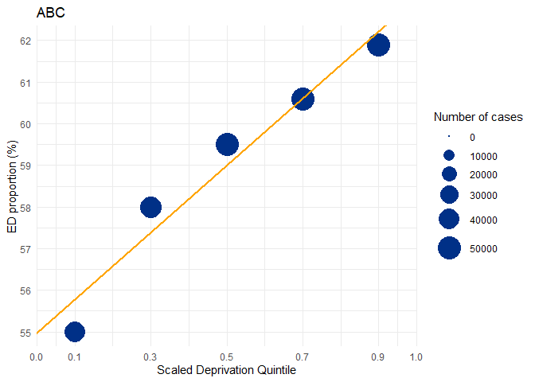

This R package provides code for calculating the Slope Index of Inequality (SII) used for the NHS Oversight Framework measure Deprivation gap in early cancer diagnosis, either for use directly in R, or as an example for translating into other tools.
Installation
You can install the development version of NHSOFearlystagecancer from GitHub with:
# install.packages("pak")
pak::pak("nhsengland/NHSOFearlystagecancer")Example
Given some early diagnosis data by deprivation quintile
library(NHSOFearlystagecancer)
example_df <- data.frame(
date = rep(as.Date("2026-02-01"), 5),
org_code = rep("ABC", 5),
deprivation = c("1 - most deprived", "2", "3", "4", "5 - least deprived"),
ed_prop = c(0.55, 0.58, 0.595, 0.606, 0.619),
ed_denom = c(39546, 43663, 48796, 51117, 50739)
)
knitr::kable(example_df)| date | org_code | deprivation | ed_prop | ed_denom |
|---|---|---|---|---|
| 2026-02-01 | ABC | 1 - most deprived | 0.550 | 39546 |
| 2026-02-01 | ABC | 2 | 0.580 | 43663 |
| 2026-02-01 | ABC | 3 | 0.595 | 48796 |
| 2026-02-01 | ABC | 4 | 0.606 | 51117 |
| 2026-02-01 | ABC | 5 - least deprived | 0.619 | 50739 |
We can get the SII with derive_sii()
example_result <- example_df |>
derive_sii(
by = c("date", "org_code"),
ed_prop_col = "ed_prop",
ed_denom_col = "ed_denom",
depr_col = "deprivation"
)
example_result[, c("org_code", "sii")]
#> # A tibble: 1 × 2
#> org_code sii
#> <chr> <dbl>
#> 1 ABC 0.0804Note we are working with early diagnosis proportion on the scale of 0 to 1, so in this case we see an 8.04 percentage point difference between in the proportion between the most and least deprived groups. That is our deprivation gap.
We can also score the provided data with score_sii(). Scoring is done by comparison to the mean SII, and here because we have only one set of values, the result falls in group 3 for “No evidence for a smaller-than-average deprivation gap”.
Code for recreating elsewhere
You can view the code for the core functionality here:
derive_sii() derive the SII across all groups in the provided data.
fit_sii() the individual fitting of the regression model.
score_sii() compare the SII to the mean SII to assign the scoring group.
The documentation of lm() may also be useful for explaining the implementation of regression by weighted least squares.
Further examples
There is also a helper for visualising the fit of the model: plot_sii()
example_result <- plot_sii(example_result, id = "org_code")
example_result$plot[[1]]
See vignette("explain-SII") for an explanation of the SII and scoring, as well as applying the function across many ICBs.